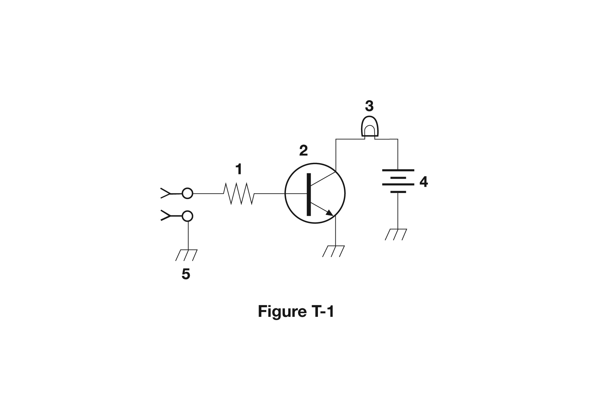
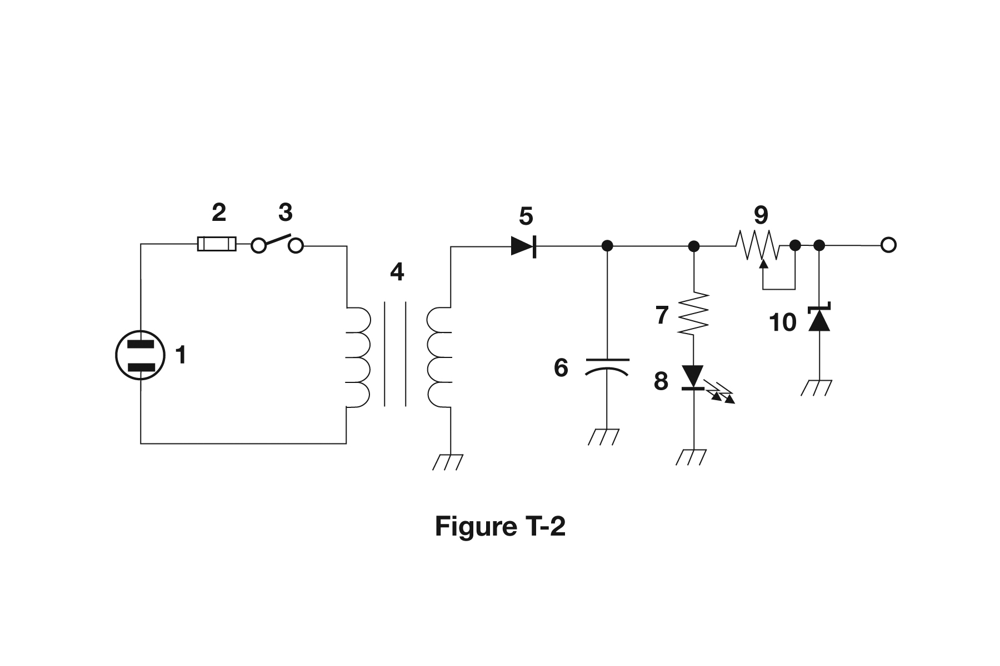
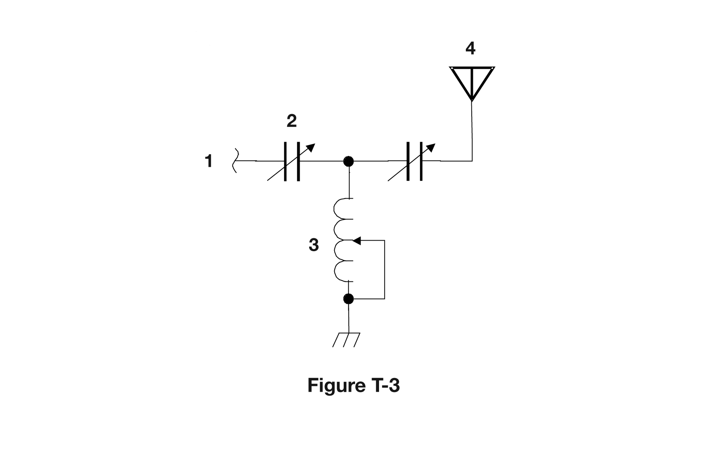

// technician · subelement T6
Electronic and Electrical Components
T6 is the parts-bin subelement: what's actually inside the radio. T6A and T6B cover the individual components — the passive parts that store or resist energy, and the semiconductors that switch and amplify it. T6C is about reading a schematic diagram well enough to point at a symbol and say what it is. T6D steps back up a level, to what whole little circuits built from those parts actually do. None of this requires outside electronics background — every term below is explained the first time it's used.
T6A
Resistors, capacitors, inductors, switches & batteries
These five kinds of parts don't amplify anything or make decisions — they just resist, store, or route electricity, which is exactly why they show up in almost every circuit ever built.
A resistor is the simplest of all: it opposes the flow of current in a DC circuit, converting some of the electrical energy passing through it into heat. A potentiometer is a resistor with a movable third contact (a "wiper") that lets you dial its resistance up or down by turning a knob or sliding a lever — which is exactly why it's the standard part used for an adjustable volume control: turning the knob changes the resistance, which changes how much of the audio signal gets through.
A capacitor stores energy in an electric field. Physically, it's just two conductive surfaces (plates) separated by an insulator (called the dielectric) — no direct electrical path between the plates at all, just an electric field building up across the gap when voltage is applied. An inductor is the magnetic counterpart: it stores energy in a magnetic field, and is typically built as nothing more than a coil of wire — current flowing through the coil builds up a magnetic field around it, and that field is where the energy lives.
Switches
Switch names describe two numbers: how many separate circuits the switch controls (poles), and how many positions each pole can connect to (throws). An SPST (single-pole single-throw) switch just opens or closes one circuit — a basic on/off switch. An SPDT (single-pole double-throw) switch does something more specific: it switches a single circuit between one of two other circuits, like a selector that routes one input to either of two possible destinations. Figure T-2 below (in T6C) has a real example: its labeled component 3 is drawn as a basic single-throw toggle — an SPST power switch in series with the battery and fuse.
Batteries
Battery chemistries split into rechargeable and non-rechargeable (primary) types. Nickel-metal hydride (NiMH), lithium-ion (Li-ion), and lead-acid are all rechargeable chemistries in common ham use — lead-acid in particular is what's inside most vehicle and backup-power batteries. Carbon-zinc, by contrast, is a classic non-rechargeable (single-use) chemistry — it's chemically similar to an alkaline cell and, once depleted, gets thrown away rather than recharged. (Nickel-cadmium, or NiCd, is also rechargeable, so don't mix it up with carbon-zinc on this point.)
A fuse also belongs on this parts list — a thin element designed to melt and open the circuit if too much current flows through it. T6A doesn't have exam questions on fuses this cycle, but T0A covers exactly why that melting behavior matters for safety, and what happens if you install the wrong one.
Covers T6A01–T6A11 (11 exam questions)
Loading…
T6B
Semiconductors: diodes, transistors & gain
A semiconductor is a material (typically silicon) that's deliberately treated so it conducts electricity under some conditions but not others — that controllable behavior is what makes diodes and transistors possible, and neither one has a mechanical moving part.
A diode is the simplest semiconductor component: it allows current to flow in only one direction, blocking it in the other. The direction that lets current through is called forward bias; the blocked direction is reverse bias. Every diode drops a small amount of voltage across itself whenever current flows forward through it (its "forward voltage drop"), and that drop actually differs from one diode type to another — a lower forward drop isn't a sign of a defective diode, it's just a property of that particular diode's construction. On the physical part itself, the cathode lead (the "output" side in forward conduction) is usually marked with a stripe printed on the body, and the two leads of any diode are named anode and cathode — current flows from anode to cathode when forward-biased. A light-emitting diode (LED) is a diode built to emit light specifically when forward current flows through it — no light on reverse bias, and no RF coupling involved at all.
Transistors
A transistor can be built from three regions of semiconductor material, and unlike a diode it can do two jobs a diode can't: act as an electronic switch (turning a larger current on or off using a much smaller control signal, with no moving contacts), and provide power gain (more on gain below). There are two families tested here:
- A bipolar junction transistor (BJT) has three electrodes named emitter, base, and collector. A small current into the base controls a much larger current flowing from collector to emitter.
- A field-effect transistor (FET) — FET is the abbreviation for exactly that — instead has electrodes named gate, drain, and source. Instead of a control current like a BJT's base, a FET is controlled by a voltage applied to its gate.
Gain is the general term for how much bigger an amplifier's output is than its input — and the exam pool is explicit that it can be expressed three equivalent ways: as a ratio of output-to-input voltage, of output-to-input current, or of output-to-input power. All three are valid descriptions of "gain," just measuring different things about the same amplified signal.
Covers T6B01–T6B12 (12 exam questions)
Loading…
T6C
Circuit diagrams & schematic symbols
A schematic is an electrical diagram that represents components with standard symbols rather than drawings of what they physically look like. That distinction is tested directly: a schematic accurately represents how components are connected to each other — it does not attempt to show wire lengths or the physical appearance of the parts. A resistor symbol looks the same whether the real part is tiny or huge; what matters on the page is which pins wire to which.
This group's whole point is being able to look at three specific figures from the pool and name each labeled part. The images below are the actual official diagrams — take a minute with each one rather than trying to memorize answers in the abstract.
Figure T-1

Two input terminals feed a resistor into a transistor, which switches an indicator-lamp circuit powered by a battery.
Reading it left to right: component 1 is a resistor (the zig-zag symbol) sitting between the input jack and the transistor. Component 2 is the transistor itself (the circled symbol with the angled arrow lead) — and its function here is tested directly: it controls the flow of current to whatever's downstream of it, exactly like every transistor in T6B. Component 3, the rounded dome symbol at the top, is a lamp (an indicator light) — when the transistor switches on, current flows up through the lamp and lights it. Component 4, drawn as stacked long and short parallel lines, is a battery supplying that lamp circuit.
Figure T-2

A simple regulated power supply: source → fuse → switch → transformer → rectifier → filter → output.
This whole figure is a small AC-to-DC power supply, and reading it as one story makes the individual symbols easier to place. On the left, component 1 (the circled stacked-lines symbol, same battery symbol as figure T-1's component 4) is the source, feeding through component 2, a small rectangle in series — the standard symbol for a fuse — and then component 3, drawn as a simple break in the line with a diagonal contact: that's tested directly, and it's a single-pole single-throw (SPST) switch, the basic on/off type from T6A.
From there the line runs into component 4, the paired coil symbols — a transformer, also tested directly. Past the transformer's second coil, component 5 (the triangle-and-bar symbol) is a diode acting as a rectifier, turning the transformer's AC output into pulsing DC (exactly the rectifier behavior covered in T6D). That feeds component 6, the parallel-plate symbol — a capacitor, tested directly, here smoothing (filtering) that pulsing DC into steadier DC. Component 7, a zig-zag, is a plain resistor in series with component 8, a diode symbol with light-emission arrows — a light-emitting diode (LED), tested directly, used here as a simple "power on" indicator; the resistor limits current through it so it doesn't burn out. Component 9, a zig-zag with an arrow through it, is tested directly as a variable resistor — likely an output-adjustment trimmer. Finally, component 10, a diode symbol with a bent tail near ground at the output, is a diode-family component wired for protection/regulation at the output stage.
Figure T-3

An antenna tuner (matching network): a variable capacitor and variable inductor reshape the line's impedance to match the antenna.
Component 1, the squiggle at the far left, is the transmission line (feed line) coming in from the transmitter. It passes through component 2, drawn as crossed plates with an arrow — a variable capacitor — before reaching a junction. From that junction, component 3 (the coiled symbol with an arrow and feedback loop, heading down to ground) is tested directly: it's a variable inductor. The line continues rightward through a second variable capacitor to component 4, the triangular symbol at the top — tested directly as an antenna. A variable capacitor and variable inductor together, arranged like this, form exactly the kind of resonant (tuned) circuit described in T6D: this whole figure is an antenna tuner, adjusted to match the feed line's impedance to the antenna.
Covers T6C01–T6C12 (12 exam questions)
Loading…
T6D
Component functions
T6A–C covered what parts are; T6D covers what small collections of them do once wired together into a functional block.
A rectifier is a device or circuit (typically built from one or more diodes, like component 5 in figure T-2 above) that changes alternating current into a varying direct-current signal — it doesn't smooth that DC out by itself, it just makes the current stop reversing direction; a filter capacitor downstream does the smoothing. A regulator is a circuit that controls the amount of voltage coming from a power supply, holding the output steady even as input voltage or load current varies. A transformer changes 120 V AC power to a lower (or higher) AC voltage for other uses — the wall-power step-down transformer in figure T-2 is a direct example.
A relay is an electrically-controlled switch: a small control current energizes a coil, which mechanically pulls a set of contacts open or closed — letting a weak control signal switch a completely separate, often much higher-power, circuit. A integrated circuit (IC) is a device that combines several semiconductors and other components into one package — a whole amplifier or logic circuit's worth of transistors, diodes, and resistors, fabricated together and sold as a single part.
A meter displays an electrical quantity as a numeric value — voltage, current, power, or SWR, read directly rather than inferred. An LED is commonly used as a simple visual indicator (the "power on" light from figure T-2 again). And shielded wire exists for a specific reason: to prevent unwanted signals from coupling onto (or off of) the wire it surrounds — a grounded metal braid or foil around the conductor intercepts stray electric fields before they can induce noise on the signal inside.
Finally, a resonant (tuned) circuit is simply an inductor and a capacitor wired together, in series or in parallel — nothing more exotic than that combination is required. It's called "resonant" because at one particular frequency, the inductor's and capacitor's opposing effects on AC current cancel out in a very specific way, making the circuit respond much more strongly at that frequency than at any other — which is exactly the mechanism behind figure T-3's antenna tuner in T6C.
Covers T6D01–T6D11 (11 exam questions)
Loading…